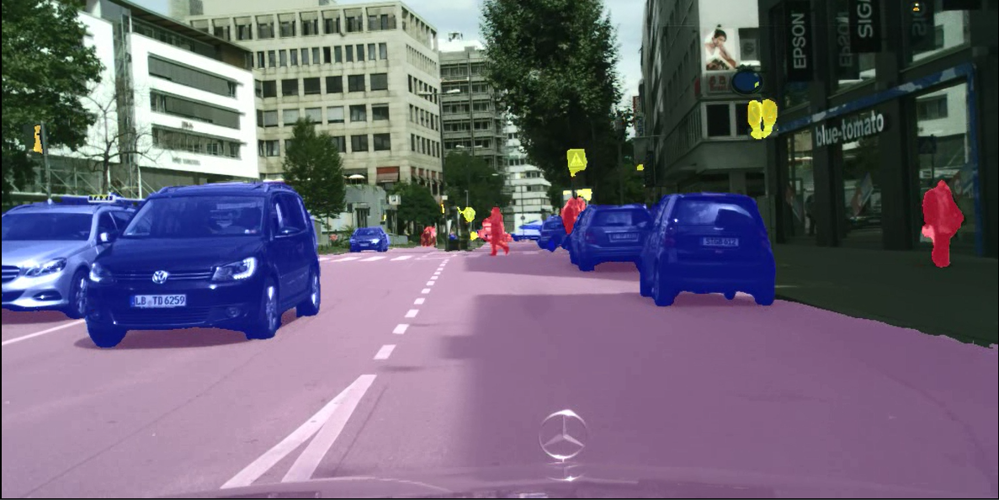

Perception Engineer
- Curious to solve real-world problems through Deep Learning, Computer Vision, Sensor Fusion
- Software Engineer Professional passionate to make Autonomous vehicles a reality
- Looking to give back through technical content creation at thinkautonomous.ai
